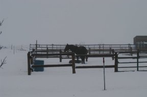
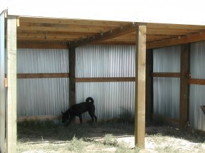
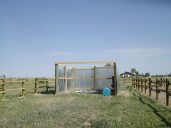
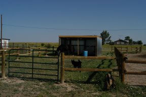
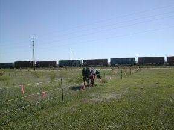
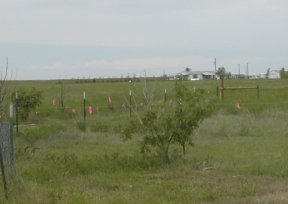
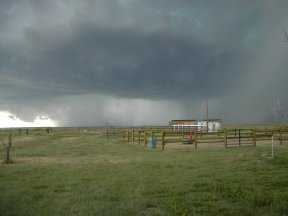

 11 October. Got our first snow of the season yesterday for about 27 hours or more. Got dumped on pretty good, and it is some heavy wet stuff. I think we got well over 10 inches, it's hard to tell out here because the wind blows so hard so in some places it's three feet deep and other places it's an inch. Here's a picture of one of my trees all bent down with the heavy snow. Bacardi has spent the majority of the last day and a half in his barn but now that the snow has stopped he's checking the outside more today.
Didn't make any entrys after the roof blew off the shed. That seemed to be the trigger for a string of botched events that kept me away from the computer but now that i'm snowed in seems like a good time to do some catching up. Got a new boiler this summer but the original installer did it wrong so now i found someone that knows what he is doing and hope to have it up and running this week as soon as some parts get in from back east. So far i've been able to keep the house about 60 degrees when it's cold out by using a boatload of space heaters. Got the shed reroofed last month and B enjoys hanging out in the new corral. Today he is forlornly looking out at his pasture which is off limits when it's messy out there. All the other projects were just little maintenance things that fill your day and of course some beer drinking on the porch while listening to rockies games.
 9 July. Had a really strong wind blow through here about 11 pm last night. It took the roof right off the new shed. Very discouraging. Lots of work and money shot to hell. Luckily Bacardi didn't get hurt. He was probably in his barn when this happened but i bet it scared the bejabbers out of him. When the roof came off it took out the electrical line that went to the chicken coop. The roof wound up a couple hundred feet out in the pasture. The night light seems to have gotten messed up also. It's on the same pole where the electric wire got ripped off. Guess I better come up with a better plan for the roof.
 6 July. Hung the gate on the new corral today and that about finishes that project. Just need a horse to put in there. Let Bacardi test it out and he seemed to think it was ok. Next project will be the deck and getting some paint on the out buildings. Sure was hot today, B was in his stall a lot as it's quite a bit cooler in the barn than outside, i'd say at least 15 degrees cooler. Speaking of nature; B came in from the pasture with a fly on his back that was the size of a miller moth. It was the biggest damn fly i've ever seen.
24 June. Got the roof of the new loafing shed finished today. Glad to have the 'high steel' part of the job over as it was killing my ankles and knees and also my comfort zone ends about 1 foot above the ground. Bacardi really enjoys his pasture. When I come out after breakfast he heads for the gate. He comes back to his corral every hour or so for a drink and to see if maybe i have a cookie for him. Sometimes he just comes back to lay down on his pile and take a nap. I'll usually let him have as much time out there as he want's from 9 till 12 but two hours or so seems to satisfy him pretty well. I really underestimated the amount of screws it would take to put up the siding; I used them all on the roof so will have to make a 'stockyards run' before I can do the sides. I'll do rails this weekend and maybe get up the last gate.
 June 7th. we have been graced with several days of warm dry weather so this morning I checked the pasture and it had firmed up pretty good. At long last the time we had been waiting for was at hand. I took B out and walked him around the pasture for a bit and then took his halter off. He immediately settled down and began munching. I have to figure the pasture is in the 'lush' state so he can only be out for an hour or two. His tummy needs to acclimate as well as his brain. I turned to on planting the remaining big posts while he turned to on his grande buffet. After I got the remaining shed posts done I went to get the tractor to do a little mowing on the north side of his pasture. As I was getting out the tractor he began trotting then loping then running around his new place. He was so happy, just cavorting all over the place. I was standing by the gate and when he settled down he trotted over to me and then went right back in his corral. I believe he may have pooped himself out a bit. It was so great to see him like that. What a great magnificent beast he is. This is what it has all been about, happy horses and happy dogs.
 June 3d. Bacardi's pasture is completely closed in and it's time to introduce him to his new space. I put ribbons on the wire to make it easier to see and took him for a walk around his pasture. Unfortunately the ground was too wet and when we got over by the road he was sinking in pretty deep so I took him back to his corral. He was pretty excited being out in the pasture, ears up, eyes bugging out and a lot of huffing and puffing. He got in a good if somewhat distracted graze before we had to call it quits. We will have to wait until it dries out some, hopefully in the next few days if we don't keep getting our nightly hail and thunderstorm. The forecast look favorable for the next few days.
I thought I'd see if I could plant some of the big poles for the new shed. They are 6x6 by 10 feet and pretty heavy so I didn't know if I could do them by myself but by being pretty picky about the hole depth before dropping the poles in it went ok. The bottom of the holes are pretty mushy so will let them dry out more before doing the rest.
 June 2d and here come the hail storms. I had gone in about 3 oclock and it was clear and bright and I'm thinking we might miss the predicted weather as it seemed to be from Denver and north. I may have dozed off watching the 4 o'clock news. I could hear thunder at about 5 and saw this coming in. Bacardi knew something was up because he was very aggitated. I zipped out back to roll up the windows in the pick up just in time. In the course of the next two hours we had two separate storms. Hail got up to large marble size and was followed by heavy rain. B got in his house and hunkered down for the duration which I was glad to see as sometimes it's so loud under that metal roof that a horse just can't stand it. I got him feed between the two storms giving him about half of his rations in the barn then after the second one was over I went back out and feed the rest for him out in his tire where he really prefers it. After it was all over we had about the most standing water I've seen from one downpour. Not pleasant but thankfully no significant damage.